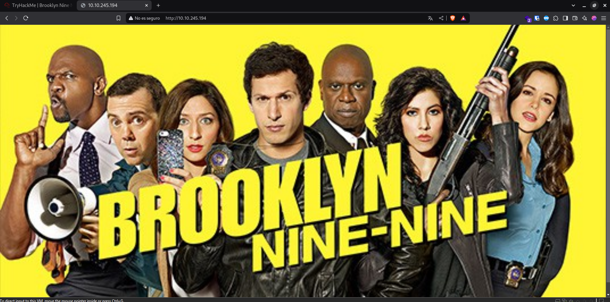

Brooklyn Nine Nine
This room is aimed for beginner level hackers but anyone can try to hack this box. There are two main intended ways to root the box.
Análisis
Esta máquina nos da rienda suelta para hacer lo que queramos, solo nos pide iniciar sesión como usuario y escalar privilegios.
Empezamos como siempre, haciendo un escaneo de los puertos abiertos de la máquina:


Tenemos 3 puertos abiertos, veamos el 80:

El código fuente nos dice que usemos stenografía:

Efectivamente, hay algo ahí, pero no tenemos el salvoconducto.
Podemos usar la herramienta stegcracker, que es como john pero para stenografía:

Encontramos la contraseña de holt. Iniciamos sesión con estas credenciales por ssh:

Ya estamos dentro del sistema con un usuario normal, hora de escalar privilegios.
Vamos a ver los permisos que tiene holt:

Si podemos usar nano con altos privilegios, podríamos cambiar los permisos del archivo sudoers:


Y ya, jeje.